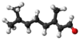

citral

Has synonym(s): 3,7-dimethy-2,6-octadienal, lemonal
Definition: Citral is an acyclic monoterpene aldehyde, and being a monoterpene, it is made of two isoprene units. Citral is a collective term which covers two geometric isomers that have their own separate names; the E-isomer is named geranial (trans-citral) or citral A. The Z-isomer is named neral (cis-citral) or citral B. These stereoisomers occur as a mixture, not necessarily racemic; e.g. in essential oil of Australian ginger, the neral to geranial ratio is 0.61.
Source: Wikipedia
Wikipedia Page (Something wrong with this association? Let us know.)
Wikidata Page (Something wrong with this association? Let us know.)